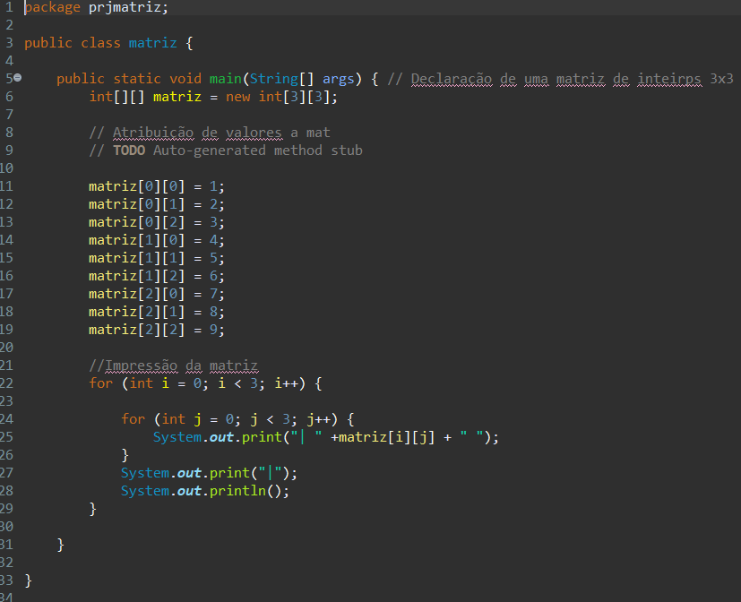

RECURSOS A USO DO JAVA
VETOR
RECURSOS
VETOR_MATRIZES
_VETOR_
Para criar um vetor, escrevo seu tipo, seu nome, e, em seguida, quantas variáveis ele vai guardar, entre colchetes "[]". Para declarar um vetor de inteiros com o nome sequencia para guardar 10 posições, por exemplo, escreveria o comando: "int sequencia[10];".
_RECURSOS_
Char: |
Uma variável do tipo char ocupa 1 byte (8 bits) e pode ser usada para armazenar um valor inteiro sem sinal (unsigned char) entre 0 e 255 ou um valor com sinal (char) entre –128 a 127. Pode ser usada tanto como um número ou como caractere. |
Double: |
armazena números com ponto flutuante, com precisão dupla, ou seja normalmente possui o dobro da capacidade de uma variável do tipo float. |
Case: |
o valor da variável passada no switch é comparado com os valores fornecidos em cada case. Se um desses valores for igual ao valor da variável, o bloco de código do case em questão será executado. |
Break: |
O break é usado para parar uma declaração switch ou um loop. |
Defaunlt: |
DEFAULT é uma palavra-chave reservada que podemos utilizar no Switch Case para direcionar o programa no caso de ser digitado um valor inválido. Nesse bloco de comando podemos colocar uma mensagem de erro, ou de alerta, aviso para o usuário como, por exemplo: “Você digitou um valor inválido, tente novamente”. |
While: |
estrutura do / while tem seu bloco de instruções executados pelo menos uma vez, então se a condição ao final das instruções for true, o bloco de instruções é executado novamente. |
_FOR_
O for é uma estrutura de repetição na qual seu ciclo será executado por um tempo ou condição pré-determinados e em uma quantidade de vezes que determinamos. Quando utilizamos o for, precisamos de uma variável para auxiliar a controlar a quantidade de repetições a serem executadas.
_MATRIZES_
Uma matriz é um tipo de dado usado para representar uma certa quantidade de variáveis de valores homogêneos. Uma matriz é uma série de variáveis do mesmo tipo referenciadas por um único nome, onde cada variável é referenciada através de um índice entre colchetes.
